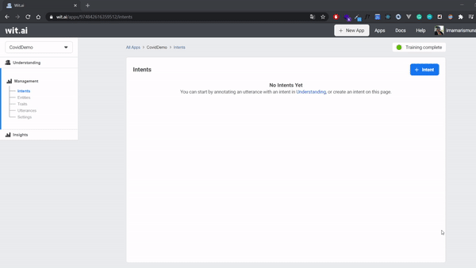
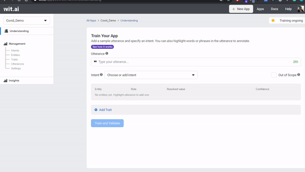
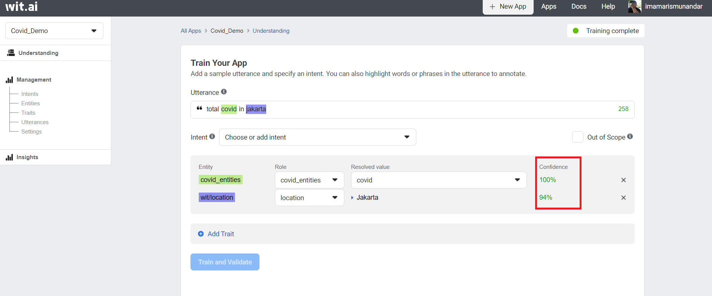
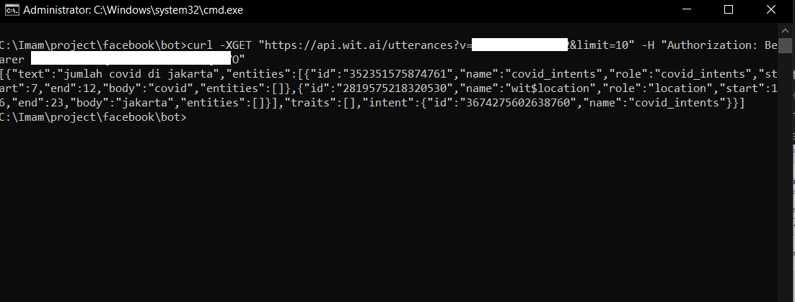

Train Covid Intent with Wit.AI API
Train covid_intent with Wit.AI API
We are going to create intents to define what the user's utterances for our wit.AI application will understand. On the dashboard click on intents, click +Intents to add a new intents.

Next, we create training intents, entities and utterances which the user will likely do on the understanding menu. Add a utterance:
- Make sure you are in Train Your App page by click Understanding on top right menu.
- enter
jumlah covid di jakartainto Utterance text box. - Label it your entitites into utterence by highlight
covidand entercovid_intents, klik Create Intents as a entitites dan highlight againjakartaand choicewit/location. - Submit your first utterance by click Train and Validate. Training will be start a few seconds - you can check the status training on top right corner.

To find out whether our training has been successful, you can try to re-enter words related to the training we are doing, namely Covid and Jakarta and make sure the confidence reaches above 90% to test the validity of our intentions.

$ curl -XGET "https://api.wit.ai/utterances?v=$APPID&limit=10" -H "Authorization: Bearer $YOURTOKEN"

You may have heard that the most important part of machine learning is data training. At this step, we're only providing our Wit app with a single data point, so let's think about the natural variations the user might respond to and repeat steps # 4 through # 5.
Now We go to the next step: how to input automatically your utterances with large data training. You can check this step:
- You can clone our github See how to input Utterance
- Now you can see file in Dataset covid intent.tsv, that is file tsv dataset for training our apps.
- Update and add your own data
for example, you can see the
init-data/datasets/covid_intent.tsv
your_covid_intent.tsv
rumah sakit rujukan di Bogor location 23 27
gejala covid covid 0 6
- Next, we need init data script for training your data. you can check this script:
init-data/covid_intents.js
covid_intents.js
const fs = require('fs');
const fetch = require('node-fetch');
const { validateUtterances } = require('../shared')
const DOUBLETAB = ' ';
const fileName = 'init-data/covid_intent.tsv'
const intentName = 'covid_intents'
const entityName = 'covid:covid'
const data = fs
.readFileSync(fileName, 'utf-8')
.split('\r\n')
.map((row) => row.split(DOUBLETAB))
const samples = data.map(([text, value, start, end]) => {
return {
text: text,
intent: intentName,
entities: [
{
entity: entityName,
start: start,
end: end,
body: value,
entities: [],
}
],
traits: [],
}
});
validateUtterances(samples).then((res) => console.log(res))
we have text, value, start, and end that we can check again from our covid_intent.tsv. we can see these terms explanation below:
text is an utterance how the user is likely to chat on Facebook messenger. In our tsv file, the first word of row is the utterance of user messages. ex: "covid di Jaksel"
value is an entity how our application will learn the word that we highlighted. we are training it within the utterance. In covid_intent.tsv, the second word of row is entity. ex: "covid"
start is the starting index highlighted entity within the text. We can see on third column.
end is the ending index highlighted entity within the text. We can see on last column.